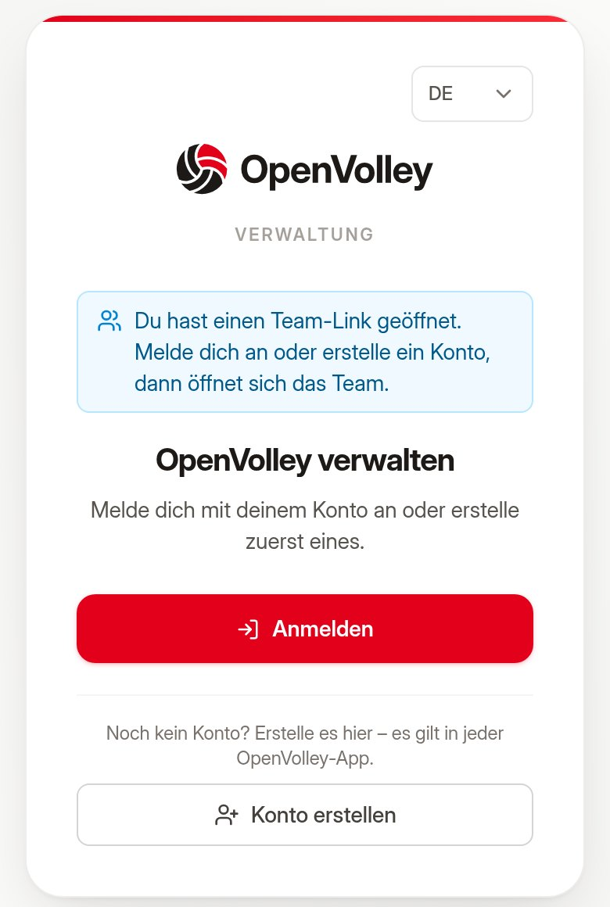
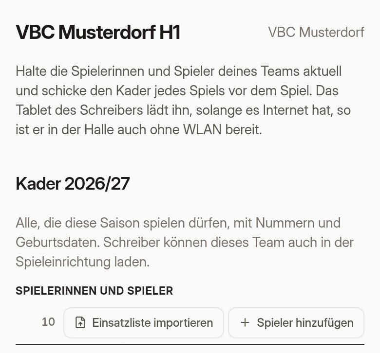
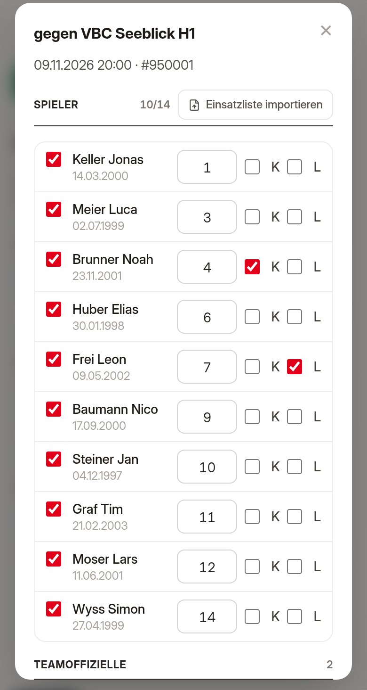
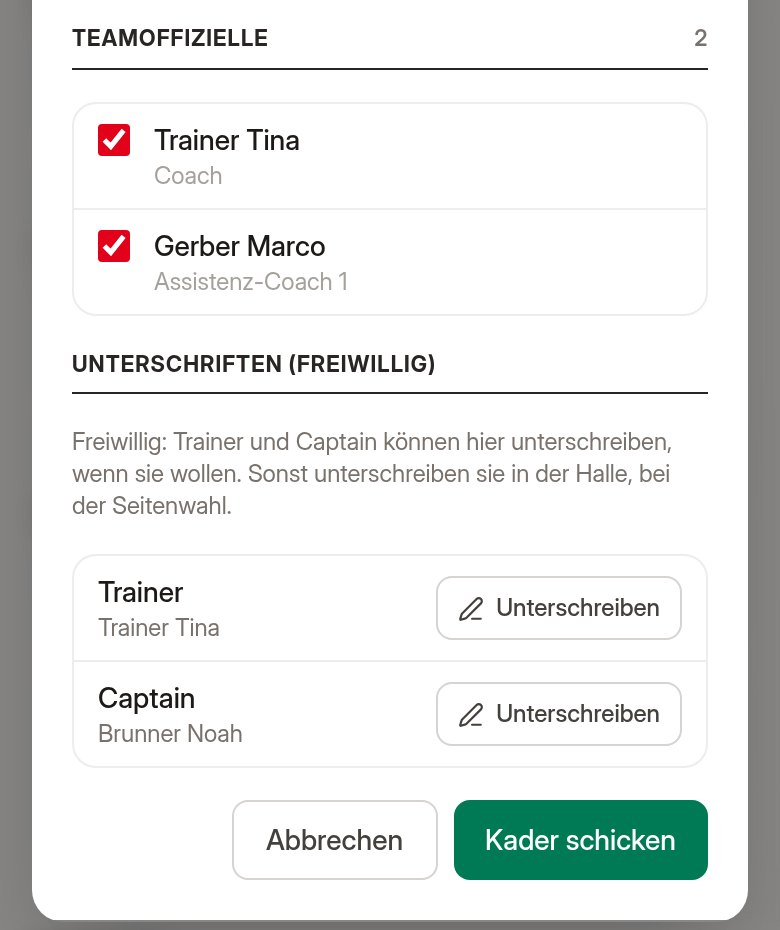
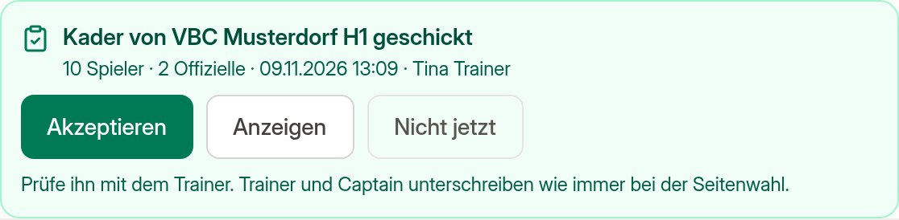
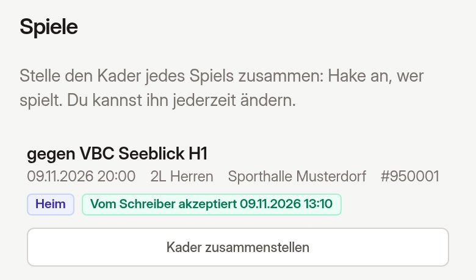

Du stellst den Kader deines Teams für jedes Spiel zu Hause zusammen und schickst ihn ab. In der Halle hat ihn der Schreiber schon auf dem Tablet, auch ohne WLAN: Kein Abtippen, keine Tippfehler bei Nummern und Lizenzen.
Deine Vereinsverantwortliche oder dein Vereinsverantwortlicher schickt dir einen Link, zum Beispiel per WhatsApp. Öffne ihn auf dem Handy oder am Computer.
Tippe auf Anmelden, wenn du schon ein OpenVolley-Konto hast, sonst auf Konto erstellen. Bestätige deine E-Mail-Adresse.
Danach öffnet sich dein Team von selbst unter Meine Teams. Falls nicht, zum Beispiel weil sich die Bestätigungs-Mail in einem anderen Browser geöffnet hat: Öffne den Teamlink einfach noch einmal.
Später findest du alles wieder auf manager.openvolley.app.

Unter Kader stehen alle, die diese Saison spielen dürfen, mit Nummer, Geburtsdatum und Lizenz.
Dann Kader speichern.

Unter Spiele stehen alle Spiele deines Teams ab heute, heim und auswärts. Tippe beim Spiel auf Kader zusammenstellen.
Hast du die Einsatzliste des Spiels als PDF? Einsatzliste importieren hakt die Spielerinnen und Spieler darauf an.

Trainer und Captain können schon jetzt unterschreiben: Unterschreiben. Das ist freiwillig. Sonst unterschreiben sie wie immer in der Halle, bei der Seitenwahl.
Dann Kader schicken. Beim Spiel steht nun Geschickt, mit der Zahl der Spieler und der Uhrzeit.
Ändern geht jederzeit: Kader bearbeiten und neu schicken. Am besten schickst du ihn bis zum Vorabend, dann hat ihn das Tablet sicher.

Das Tablet des Schreibers hat deinen Kader schon geladen. Beim Einrichten des Spiels erscheint er über deinem Team. Der Schreiber tippt auf Akzeptieren und prüft ihn mit dir. Änderungen in letzter Minute macht er direkt auf dem Tablet.

Danach steht bei deinem Spiel Vom Schreiber akzeptiert. Dein geschickter Kader ist damit gelöscht: Er steht jetzt im Matchblatt.
Was ist was:
